Circuit Elements
Following is a list of all supported elements:
Elements are added to the circuit by the add_element function described in this section. Each element has a unique id given as a second parameter. The following list specifies parameters for each element.
One-port elements
Resistor
Passive electrical component that implements electrical resistance as a circuit element. Described by its Resistance R and connecting nodes.
[Resistor, id, nodeA, nodeB]
// example
[Resistor, "R1", 1, 0]Capacitor
Passive electrical component that stores electrical energy in an electric field. Described by its capacitance C, connecting nodes and initial voltage U0.
U0 is optional and can be omitted.
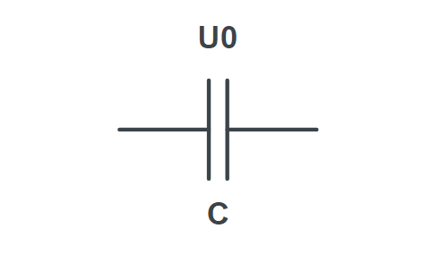
[Capacitor, id, nodeA, nodeB, U]
// example
[Capacitor, "C1", 1, 0]
[Capacitor, "C1", 1, 0, "U0"]Inductor
Passive electrical component that stores energy in a magnetic field when electric current flows through it. Described by its inductance L, connecting nodes and initial current I0.
I0 is optional and can be omitted.
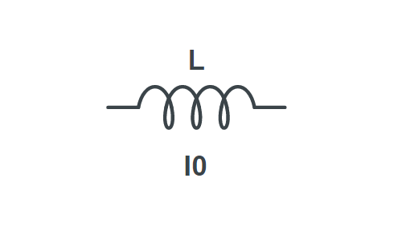
[Inductor, id, nodeA, nodeB, I]
// example
[Inductor, "L1", 1, 0]
[Inductor, "L1", 1, 0, "I0"]Impedance
Opposition to alternating current presented by the combined effect of resistance and reactance in a circuit. Described by impedance Z and connecting nodes.
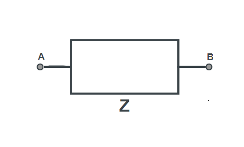
[Impedance, id, nodeA, nodeB]
// example
[Impedance, "Z1", 1, 0]Admittance
Measure of how easily a circuit or device will allow a current to flow. It is defined as the reciprocal of impedance. Described by admittance Y and connecting nodes.
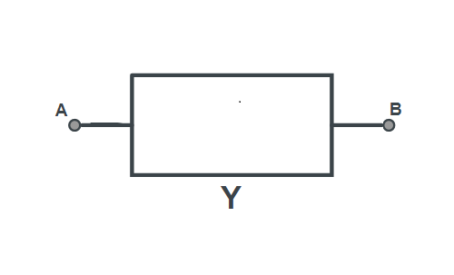
[Admitance, id, nodeA, nodeB]
// example
[Admitance, "Y1", 1, 0]Ideal Voltage Source
Active element with the property that the voltage across the terminals is specified at every instant in time. Described by voltage V and connecting nodes.
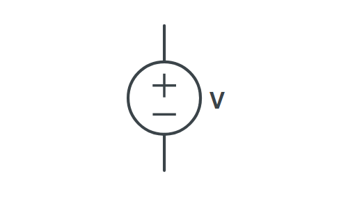
[Voltage, id, nodeA, nodeB]
// example
[Voltage, "Ug", 1, 0]Ideal Current Source
Active element which supplies constant current irrespective of load resistance. Described by current I and connecting nodes.
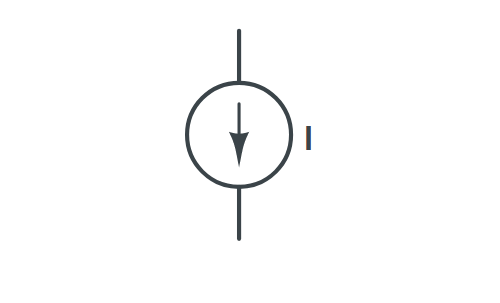
[Current, id, nodeA, nodeB]
// example
[Current, "Ig", 1, 0]Two port elements
Operational Amplifier
Differential amplifier with infinite open loop gain, infinite input resistance and zero output resistance. Defined by its three connecting nodes.
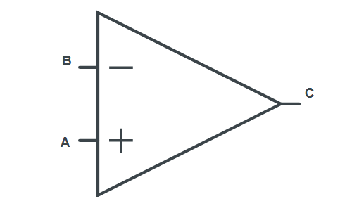
[OpAmp, id, [nodeA, nodeB], nodeC ]
// example
[OpAmp, "OpAmp1", [1, 0], 2 ]Two port element (ABCD parameters)
Electric element defined by its ABCD parameters.
$\begin{bmatrix} V_1 \\ I_1 \end{bmatrix} = \begin{bmatrix} A & B\\ C & D \end{bmatrix} \begin{bmatrix} V_2 \\ I_2 \end{bmatrix}$
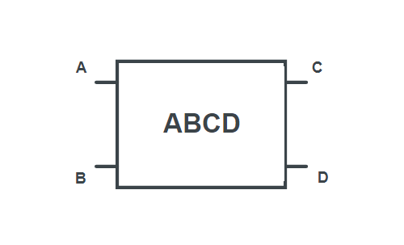
[ABCD, id, [nodeA, nodeB], [nodeC, nodeD], [A, B, C, D] ]
// example
[ABCD, "OpAmp1", [1, 0], [2, 3], ["A", "B", "C", "D"] ]Controlled Sources
VCVS (Voltage-controlled Voltage-source)
Electric element that will keep the source voltage proportional to the controlling voltage regardless of what else is connected to the source. Defined by its connecting nodes and voltage gain.
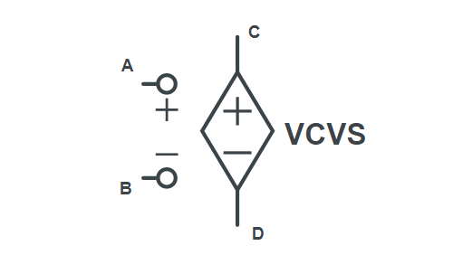
[VCVS, id, [nodeA, nodeB], [nodeC, nodeD], voltageGain ]
// example
[VCVS, "VCVS1", [1, 0], [2, 3], "a" ]VCCS (Voltage-controlled Current-source)
Electric element that will keep the current at the source proportional to the controlling voltage regardless of what else is connected to the source. Defined by its connecting nodes and transconductance.
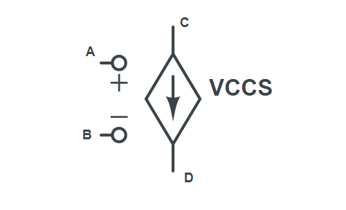
[VCCS, id, [nodeA, nodeB], [nodeC, nodeD], transconductance ]
// example
[VCCS, "VCCS1", [1, 0], [2, 3], "g" ]CCVS (Current-controlled Voltage-source)
Electric element that will keep the voltage proportional to the current controlling it regardless of what else is connected to the source. Defined by its connecting nodes and transresistance.
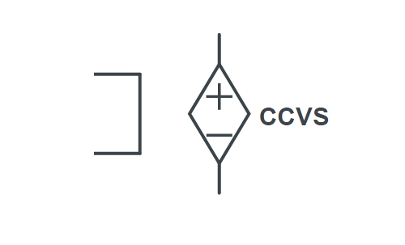
[CCVS, id, [nodeA, nodeB], [nodeC, nodeD], transresistance ]
// example
[CCVS, "CCVS1", [1, 0], [2, 3], "m" ]CCCS (Current-controlled Current-source)
Electric element that will keep the current at the source proportional to the current controlling it regardless of what else is connected to the source. Defined by its connecting nodes and current gain.
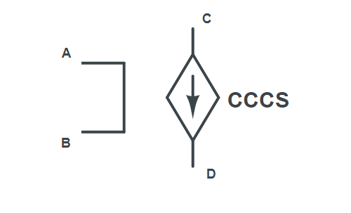
[CCCS, id, [nodeA, nodeB], [nodeC, nodeD], currentGain ]
// example
[CCCS, "CCCS1", [1, 0], [2, 3], "a" ]Transformers
Ideal Transformer
Linear transformer that is lossless and perfectly coupled. Defined by its connecting nodes and turn ratio.
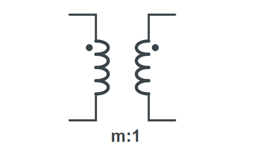
[IdealT, id, [nodeA, nodeB], [nodeC, nodeD], turnRatio ]
// example
[IdealT, "IdealT1", [1, 0], [2, 3], "m" ]Inductive Transformer
Time invariant element without loss built with coupled coils. Defined by its connecting nodes, coil ids L1_id, L2_id, L12_id and optional initial currents I_01, I_02
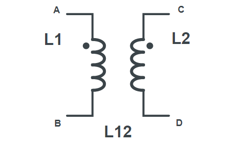
[InductiveT, id, [nodeA, nodeB], [nodeC, nodeD], [L1_id, L2_id, L12_id], [I_01, I_02] ]
// example
[InductiveT, "InductiveT", [1, 0], [2, 3], ["L1", "L2", "L12"] ]Transmission lines
Specialized cable or other structure designed to conduct electromagnetic waves in a contained manner. The term applies when the conductors are long enough that the wave nature of the transmission must be taken into account. Defined by its id, connecting nodes, Zc and electrical length $\theta$ (Phasor transform) or delay $\tau$ (Laplace transform)
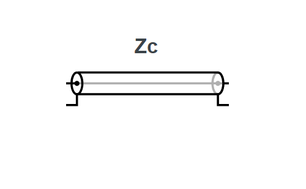
[TransmissionLine, id, [nodeA, nodeB], [nodeC, nodeD], [Zc, theta/tau] ]
// example
[TransmissionLine, "T1", [1, 0], [2, 3], ["Z0", "t"] ]